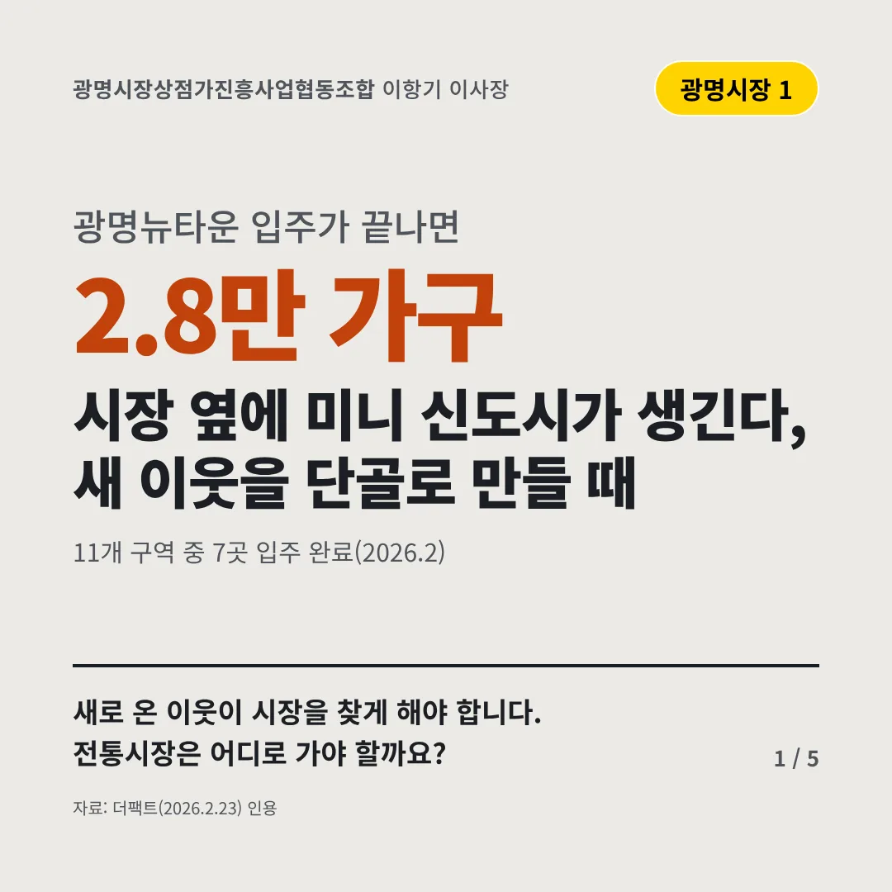
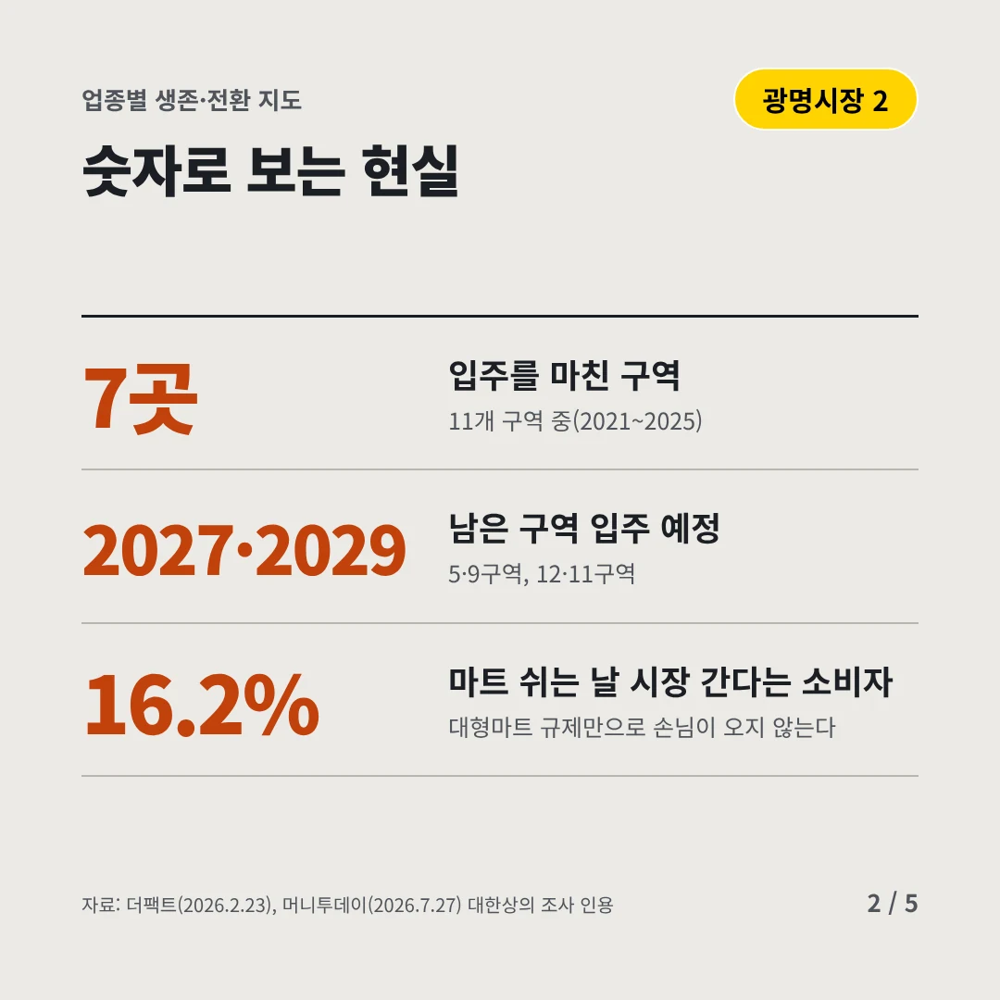
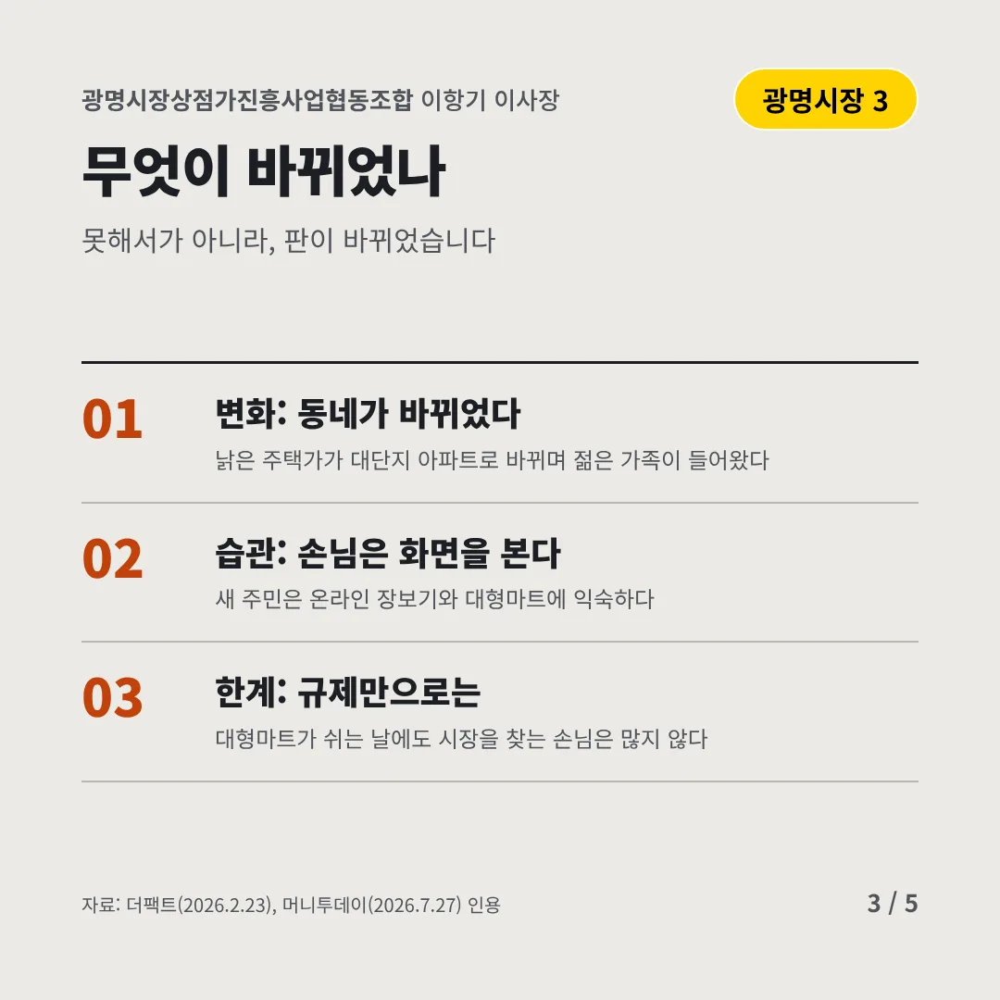
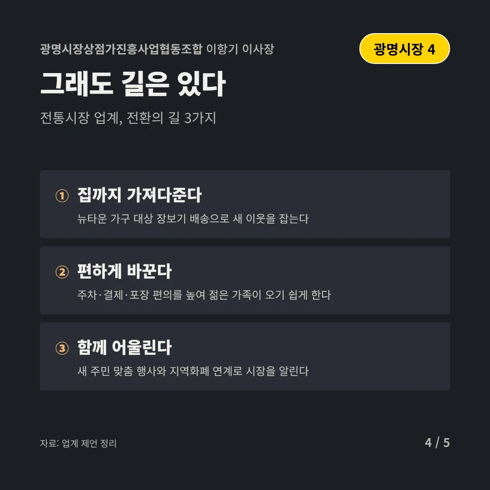
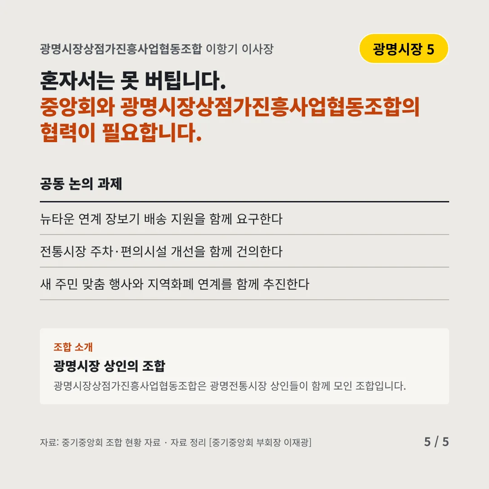
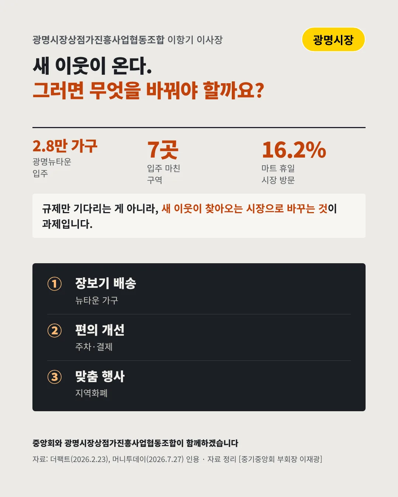

광명시장상점가진흥사업협동조합
시장 옆에 미니 신도시가 생긴다, 새 이웃을 단골로 만들 때
2.8만 가구 광명뉴타운 입주가 끝나면






새로 온 이웃이 시장을 찾게 해야 합니다. 전통시장은 어디로 가야 할까요?
숫자로 보는 현실
- 7곳입주를 마친 구역11개 구역 중(2021~2025)
- 2027·2029남은 구역 입주 예정5·9구역, 12·11구역
- 16.2%마트 쉬는 날 시장 간다는 소비자대형마트 규제만으로 손님이 오지 않는다
무엇이 바뀌었나
- 변화: 동네가 바뀌었다낡은 주택가가 대단지 아파트로 바뀌며 젊은 가족이 들어왔다
- 습관: 손님은 화면을 본다새 주민은 온라인 장보기와 대형마트에 익숙하다
- 한계: 규제만으로는대형마트가 쉬는 날에도 시장을 찾는 손님은 많지 않다
그래도 길은 있다
- 집까지 가져다준다뉴타운 가구 대상 장보기 배송으로 새 이웃을 잡는다
- 편하게 바꾼다주차·결제·포장 편의를 높여 젊은 가족이 오기 쉽게 한다
- 함께 어울린다새 주민 맞춤 행사와 지역화폐 연계로 시장을 알린다
한 장 요약

조합 소개
광명시장상점가진흥사업협동조합은 광명전통시장 상인들이 함께 모인 조합입니다.
자료: 더팩트(2026.2.23), 머니투데이(2026.7.27)